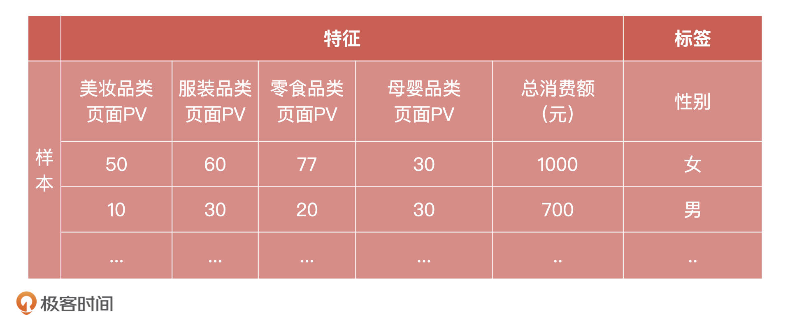

- 00 开篇词 你好，产品经理！你的未来价值壁垒在哪儿？.md.html
- 01 行业视角：产品经理眼中的人工智能.md.html
- 02 个人视角：成为AI产品经理，要先搞定这两个问题.md.html
- 03 技术视角：AI产品经理需要懂的技术全景图.md.html
- 04 过来人讲：成为AI产品经理的两条路径.md.html
- 05 通过一个 AI 产品的落地，掌握产品经理工作全流程.md.html
- 06 AI 模型的构建过程是怎样的？（上）.md.html
- 07 AI模型的构建过程是怎样的（下）.md.html
- 08 算法全景图：AI产品经理必须要懂的算法有哪些？.md.html
- 09 K近邻算法：机器学习入门必学算法.md.html
- 10 线性回归：教你预测，投放多少广告带来的收益最大.md.html
- 11 逻辑回归：如何预测用户是否会购买商品？.md.html
- 12 朴素贝叶斯：让AI告诉你，航班延误险该不该买？.md.html
- 13 决策树与随机森林：如何预测用户会不会违约？.md.html
- 14 支持向量机：怎么预测股票市场的涨与跌？.md.html
- 15 K-means 聚类算法：如何挖掘高价值用户？.md.html
- 16 深度学习：当今最火的机器学习技术，你一定要知道.md.html
- 17 模型评估：从一个失控的项目看优秀的产品经理如何评估AI模型？.md.html
- 18 核心技能：产品经理评估模型需要关注哪些指标？.md.html
- 19 模型性能评估（一）：从信用评分产品看什么是混淆矩阵？.md.html
- 20 模型性能评估（二）：从信用评分产品看什么是KS、AUC？.md.html
- 21 模型性能评估（三）：从股价预测产品看回归算法常用的评估指标.md.html
- 22 模型稳定性评估：如何用PSI来评估信用评分产品的稳定性？.md.html
- 23 模型监控：产品经理如何建设算法模型监控指标体系？.md.html
- 24 推荐类产品（一）：推荐系统产品经理的工作职责与必备技能.md.html
- 25 推荐类产品（二）：从0打造电商个性化推荐系统产品.md.html
- 26 预测类产品（一）：用户复购意向预测的底层逻辑是什么？.md.html
- 27 预测类产品（二）：从0打造一款预测用户复购意向的产品.md.html
- 28 预测类产品（三）：从0打造一款“大白信用评分产品”.md.html
- 29 自然语言处理产品：从0打造一款智能客服产品.md.html
- 30 AI产品经理，你该如何提升自己的价值？.md.html
- 31 AI产品经理面试，这些问题你必须会答！.md.html
- 春节加餐1 用户增长模型：怎么利用AI技术判断新渠道性价比？.md.html
- 春节加餐2 一次答疑，带你回顾模型评估的所有基础概念.md.html
- 期中周测试题 ，你做对了吗？.md.html
- 期中答疑 AI产品经理热门问题答疑合集.md.html
- 结束语 唯一不变的，就是变化本身！.md.html
- 捐赠
期中答疑 AI产品经理热门问题答疑合集
你好，我是海丰。
到今天为止，我们的课程已经更新过半了。我非常开心看到很多同学一直在坚持留言，认真回答课后问题。不过，我也发现，不少同学已经慢慢掉队了，有的人是想要拿出大块的时间来学习，有的人是遇到问题之后没有解决，进度就停下了，总之是积累了很多的课程没有学习。
从今天开始，我们就进入期中周了。首先，我会整理出一些关注度比较高的课后问题，在这里进行统一的解答，其次，我还准备了一道问答题，通过解决它，希望能帮助你对前半程学过的知识进行梳理，查缺补漏。
我先给你准备一份学习指南：首先，关注度比较高的问题我分成了三类，分别是关于产品岗位、关于技术边界，以及关于项目流程的问题。你可以结合我下面的分类，直接去找对应的问题答案。如果你还有其他的疑问，也可以在留言区提问，我都会尽力解答。然后，你可以集中精力去做我留下的问答题，问答题的解决思路我会在周五进行更新，记得准时来看。
话不多说，直接进入今天的答疑吧！
关于产品岗位
问题1：如何快速建立对一个行业的结构认知？
想要快速对一个行业有整体的宏观认知，可以先从这个行业的产业链入手，了解这个产业中一个完整的价值创造过程是怎样的，行业里有哪些头尾部公司。获取这些产业认知内容的途径，我总结了一下，一般有3种方式：
行业上市公司财报，找行业内的上市公司，通过财报信息能全面的了解，行业的用户、商业、供应链、业务发展等信息。
问题2：为什么 AI 产品经理多分布在 B 端企业？
每个行业都会有“产品岗位”，所以产品经理必然是覆盖全行业的。但为了区分产品经理就职的主流方向，大部分 AI 产品经理活跃在 B 端，原因在于过去几年 AI 在 B 端的产业，更容易商业化。
不过，岗位需求也是随着行业发展而动态变化的，所以最近一两年，我们也能看到 AI 产品经理在 ToC 和 ToB 中的岗位逐渐多了起来，例如推荐系统产品经理，虽然岗位 Title 没有提到 AI，但是岗位能力就是一个 AI 产品经理的要求。
随着 AI 技术在各行业的不断落地，我认为，ToC 的 AI 产品经理势必会成为未来几年后的岗位主流。
问题3：没有 AI 项目环境，产品经理如何转型？
这个问题我发现还是很普遍的，所以我把它单独拿出来说，我认为可以通过三个步骤来学习。
第一步，夯实基础。 我建议你先完整地跟着课程节奏学习一遍，重点掌握 AI 产品经理的三大能力，掌握课程中算法和评估相关的知识点。
第二步，以教促学。 在你了解了课程中的内容后，要试着用自己的话把这些内容讲出来，让别人听懂，而这离不开“从学习到分享再到学习”的一个迭代过程。
第三步，落地实践。 如果所在团队中没有算法同学，那你可以试着在工作中提一些和 AI 相关小需求，这些需求是可以通过相对简单容易的传统机器学习算法来解决的，比如KNN、Naive Bayes，这是为了确保工程研发同学可以通过学习实现。
这样一来，通过研发同学的“踩坑”经历，你可以总结出他们在落地算法过程中对复杂问题的解决和效果反馈，再把它们补充到你的知识技能树中，积累经验。总之，我们要善于利用身边的资源，赋能于自己的业务，来帮助自己提升。
问题4：算法工程师如何转型 AI 产品经理？
对于想要转型产品经理的算法同学，我有2点建议。
首先，需要理解产品经理和技术人员的区别。产品经理需要的是知识的广度，需要打通上下游与横向部门，而技术人员更多的是要在技术领域深挖。
其次，需要突破技术思维的限制。比如，需要意识到，很多时候产品经理做一个产品更重要的是对业务有价值，而不是要追求技术的创新，或者技术的某些提升。就像有时候一个模型 KS 是 30 还是 40 对于业务没有明显的提升，我们就用去提升这些指标。
总之，产品经理决定做一个事情的出发点，是通过技术来实现业务价值，有时候技术如何做反而不重要。
在实际操作上，我建议这类同学可以多和产品经理沟通，看看他们是怎么做的，他们的思考路径是什么，当他们给你提需求的时候，他们考虑的问题都有哪些，来发现自己和产品经理之间的区别，让自己习惯按照产品的思维去思考。
问题5：测试工程师如何转型 AI 产品经理？
对于这个问题，我有些犹豫，我比较推荐测试工程师在测试领域深造，然后将技能发展到 AI 测试领域，这样你作为一个测试工程师会有得天独厚的优势。
作为一名 AI 测试工程师，需要掌握的知识有机器学习基础知识、Python 编程、大数据基础、模型测试。当然，如果还是想转型 AI 产品经理，那么我也建议你参考上一个问题“算法工程师如何转型 AI 产品经理”，很多的准备工作都是相通的。
关于技术边界
问题6：AI 产品经理需要什么样的数学基础？
数学基础是很多转型产品经理都关注的问题。我认为，一个相对完整的数学基础知识体系包括：线性代数、概率论、数理统计、运筹学（最优化方法）、信息论。
但这并不是说，产品经理需要从头开始啃数学基础知识，而是你需要有两方面的认知。
一方面，我们要清晰产品经理对于数学基础的掌握边界。与算法和研发相比，产品经理不需要建模，所以有数学基础不需要你究其原理，如数理统计中的统计推断方法，或运筹学中的最优化方法，你的价值在于利用技术服务业务而不是精通技术。
另一方面，对于想快速入门AI领域的产品经理来说，一定要本着知识的落地应用为学习原则，例如作为产品经理来说为什么要学习概率分布，你要知道它在工作中的作用是什么，其中一点是为了和算法同学同频沟通，另一个很重要原因是为了验收产品。
因此，在转型初期，我们大可以以目的为导向只掌握和工作相关的数学知识，等后面工作稳定下来了，再适当去拓展自己的技术边界。
问题7：什么是数据特征、样本，以及标签？
我们先来看它们具体的定义，你可以结合下面的表格一块来理解：
- 标签：标签就是预测的结果，比如表格中的性别：“男”、“女”；
- 特征：特征就是一系列的信息，可以作为人或事物特点的标识，用来描述标签；
- 样本：样本是数据实例、特征的集合。样本可以带标签，也可以不带标签。带标签的样本用于模型的训练，不带标签的样本用于模型的预测。

问题8：什么是特征归一化？
对特征进行归一化处理，是为了消除数据特征之间的量纲影响，让不同指标之间具有可比性。例如，分析一个人的身高和体重对健康的影响，如果使用米（m）和千克（kg）作为单位，那么身高特征会在 1.5 ~ 2.0m 的数据范围内，体重特征会在 50 ~ 100kg 的范围内，分析出来的结果显然会倾向于数值差别比较大的体重特征。
所以，为了得到更为准确的结果，我们需要对它们进行特征归一化处理，让每个指标处于同一数值量级。常用方法主要有两种：
线性函数归一化：归一化后特征值 = (原值 - 特征最小值) / (特征最大值 - 特征最小值)，在此方法的基础上，所有的特征值都会落在 [0, 1] 的区间里；
标准差正态分布：归一化后特征值 = 特征平均值 / 特征标准差，使用此方法，转换后的特征有负有正，而且它们的均值为 0。
关于项目流程
问题9：AI 产品 PRD 文档与传统产品 PRD 的不同
AI 产品 PRD 文档与传统产品 PRD 的不同主要有以下三方面的不同：
第一，模型输出。
即算法目标，你要解决的是一个分类问题还是一个回归问题（输出是一个概率还是一个连续值）。
如果是一个概率值，并且是用在分类场景中的，你还要确定是否需要进行二次加工，比如在做高潜用户预测，模型输出的是一个概率值，但这个概率值在业务场景无法使用，所以还需要映射成具体的用户等级。
第二，数据接入。
是否有数据依赖，注明已接入的数据，包括数据类型（Hive / MQ），数据量大小，更新频率，Hive表名及格式。
第三，验收标准。
除了如 KS、AUC 等强模型指标的确定。另外还要以目标为导向编写 PRD 的验收标准，不要拘泥形式。
举个例子，在推荐系统的排序环节中，产品经理要以目标为导向将模型的评估指标写到 PRD 中。如果产品是以提高 CTR（点击率） 为目标，就可以使用 CTR 作为衡量排序模型的指标。但在电商场景中，还存在 CVR、GMV、UV 等多个核心指标，所以并不是一个 CTR 指标就能决定的。这个时候，产品经理就要根据业务目标来优化排序模型的验收标准，如果公司追求的是 GMV，只单纯提升 CTR ，在一定程度上只能代表着用户体验的提升。
但算法工程师对这些点的考虑就会相对比较少，因为他们只对模型负责，不对产品负责。因此，这正是产品经理体现个人 PRD 的价值的好时机。
问答题
假如，你现在是一家电商平台的产品经理，负责点评系统的产品设计，现在有一个需求是要通过计算将海量评论中的垃圾评论（如，打广告的情况）过滤出来，你会怎么思考和设计产品呢？
好了，以上就是我们这次期中答疑的全部内容。我也希望这是一次我们共同交流和讨论的时间，你可以在这节课后把你的疑问分享给我，我会尽力帮助你扫清疑问，好让你赶上进度，顺利进入下一段征程！
© 2019 - 2023 Liangliang Lee. Powered by gin and hexo-theme-book.